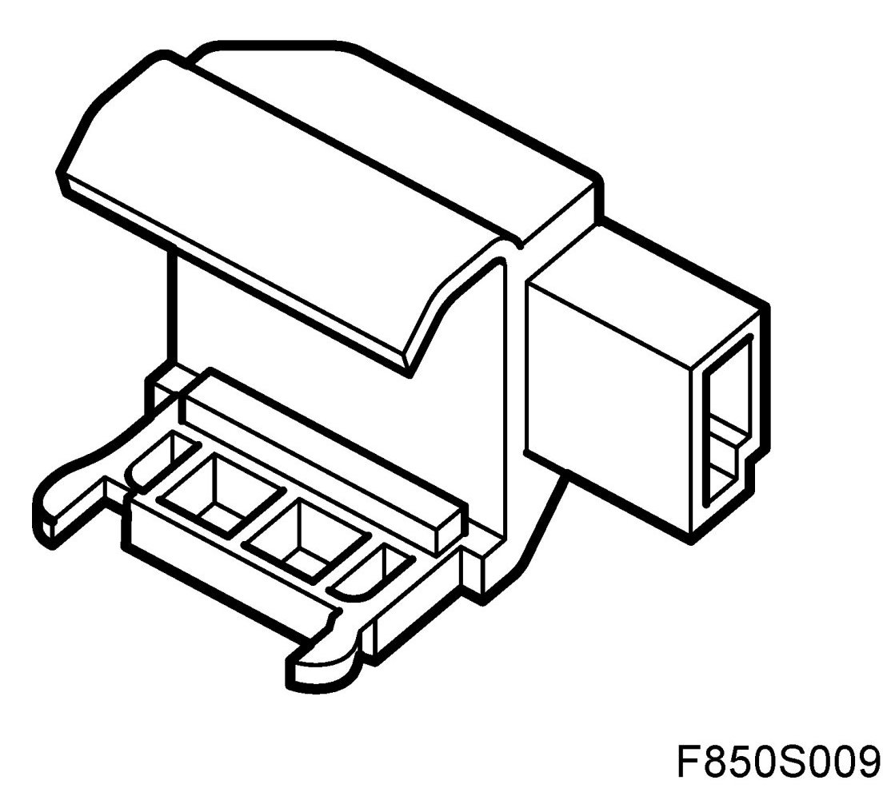
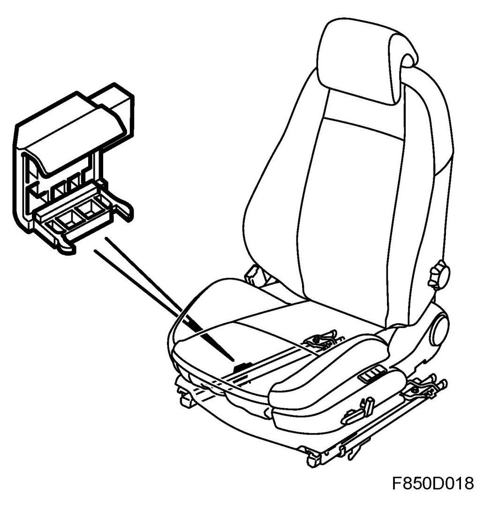
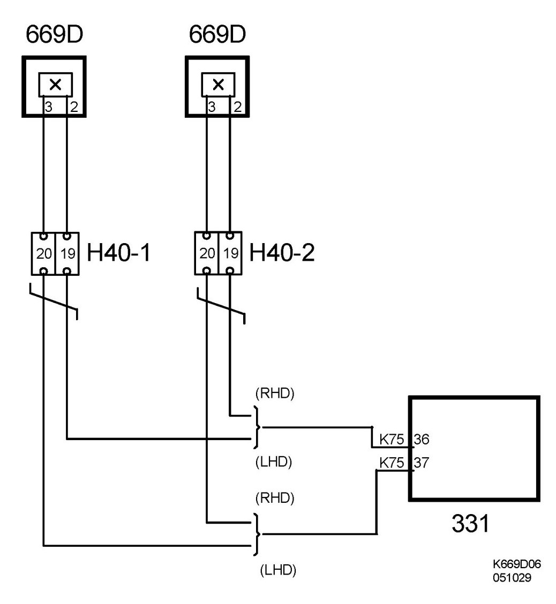
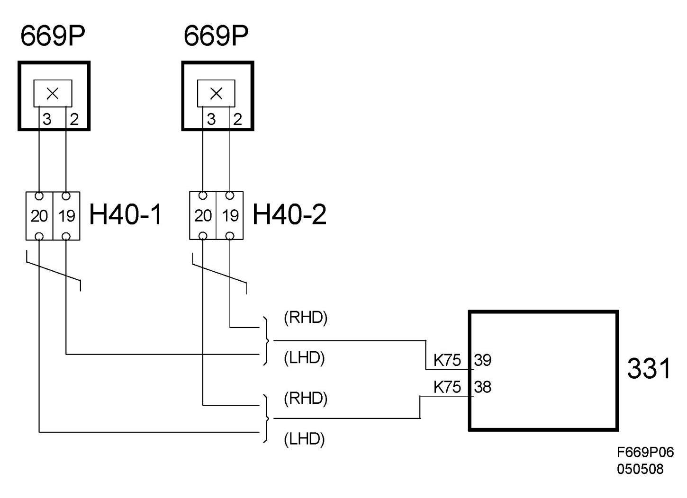

Seat Sensor/Switch: Description and Operation
Position Sensor, Seat (669D)
Location
Position sensor, seat, driver's (669D)

Main task
The seat position sensors identify a forward or rear seat position and send this information to the control module which determines how the detonation circuits should be activated.
Type
The seat position sensor consists of a Hall sensor and a magnetic strip. The Hall sensor (1) is mounted on the inner section of the seat rail which is secured to the floor. The magnetic strip (2) is mounted on the upper, moveable seat rail. When the seat is between the forward position and 30% rearwards, the Hall sensor is not affected by the magnetic strip. The control module provides the Hall sensor with a constant voltage and measures once every 100 ms while simultaneously measuring which current is passing through the sensor. The current through the Hall sensor is dependent on the magnetic field which affects the sensor.

Connect
Driver's seat position sensor B+ feed from control module pin 37. The signal from the sensor is connected to pin 36 on the control module for (669D).

Passenger seat position sensor B+ feed from control module pin 38. The signal from the sensor is connected to pin 39 on the control module for (669P).
